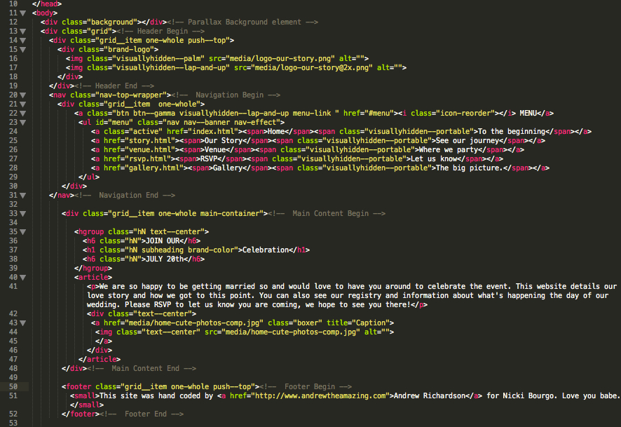

Created: 9/24/2013
By: Andrew Richardson
Email: ajrgraphicdesign@gmail.com
Portfolio
Thank you for purchasing my theme and congratulations to whoever is getting married! I created this theme because I myself am soon to be married and I didn't feel like any of the current themes really told our story well. I wanted to focus on our relationship and the story that has developed because of it instead of just the average frilly wedding website with no substance. If you have any questions that are beyond the scope of this help file, please feel free to email via my user page contact form here. Thanks so much!
This theme is generally a single column grid but it has the flexibility to be column if you need it to be using the simple grid structure set up with the Inuit framework. You can see this grid system in action here.
If you would like to edit the color, font, or style of any elements in one of these columns, you would do the following:
a {
color: #someColor;
}
If you find that your new style is not overriding, it is most likely because of a specificity problem. Scroll down in your CSS file and make sure that there isn't a similar style that has more weight.
I.E.
.class a {
color: #someColor;
}
So, to ensure that your new styles are applied, make sure that they carry enough "weight" and that there isn't a style lower in the CSS file that is being applied after yours.
There is one CSS file for this theme. This keeps the number of requests low and you page loading as fast as possible. The CSS is heavily documented with explinations of the elements. There are some things that pertain to the SCSS structure which you can ignore if you are just going to be editing the CSS.
Generally elements look like this:
/* === Comments about the following classes === */ classes and properties
The CSS is structured with like classes together so it's easy to find what you are looking for. Below is a table of contents for the CSS:
/*------------------------------------*\
$CONTENTS
\*------------------------------------*/
/**
* CONTENTS............You’re reading it!
* WARNING.............Here be dragons!
* NORMALIZE...........normalize.css
* RESET...............Set some defaults
* CLEARFIX............
* SHARED..............Shared declarations
*
* MAIN................High-level elements like `html`, `body`, etc.
* HEADINGS............Double-stranded heading hierarchy
* PARAGRAPHS..........
* SMALLPRINT..........Smaller text elements like `small`
* QUOTES..............
* CODE................
* LISTS...............
* IMAGES..............
* TABLES..............
* FORMS...............
*
* GRIDS...............Fluid, proportional and nestable grids
* COLUMNS.............CSS3 columns
* NAV.................A simple abstraction to put a list in horizontal nav mode
* MEDIA...............Media object
* MARGINALIA..........Simple marginalia content
* ISLAND..............Boxed off content
* BLOCK-LIST..........Blocky lists of content
* MATRIX..............Gridded lists
* SPLIT...............A simple split-in-two object
* ICON-TEXT...........Icon and text couplings
* BEAUTONS............Use the beautons micro library
* LOZENGES............Basic lozenge styles
* RULES...............Horizontal rules
* STATS...............Simple stats object
* GREYBOX.............Wireframing styles
*
* WIDTHS..............Width classes for use alongside the grid system etc.
* PUSH................Push classes for manipulating grids
* PULL................Pull classes for manipulating grids
* BRAND...............Helper class to apply brand treatment to elements
* HELPER..............A series of helper classes to use arbitrarily
* DEBUG...............Enable to add visual flags for debugging purposes
*
* THEME...............Begins to put skin on the elements, if you want to edit the style you should start here.
* RESPONSIVE..........How the elements look on smaller devices.
* TYPOGRAPY...........Fine tuning of the typography elements.
* BOXER...............Lightbox plugin CSS.
* GALLERY.............How the gallery looks and functions.
*/
Most of the elements you will want to modify can be found in the THEME section.
If you would like to edit a specific section of the site, simply find the appropriate label in the CSS file, and then scroll down until you find the appropriate style that needs to be edited.
Any images that are placed within the blog section have 5px worth of padding and a light bluish background. If you would like to edit the display of these images, find the following section in the style sheet:
#primaryContent #blog img {
change styles here:
}
This theme imports three Javascript files.
[some Javascript goes here...along with an general explanation] [some Javascript goes here...along with an general explanation] [some Javascript goes here...along with an general explanation]
[some Javascript goes here...along with an general explanation]
I've used the following images, icons or other files as listed.
If you have any questions please contact me, I'd be glad to help you solve your problem.